A program that grows as it draws
A box holds a number, a repeat block runs the body again and again, and a line that gets a little longer each time turns into a spiral. Nothing here is a special effect — it is the same handful of blocks, arranged.
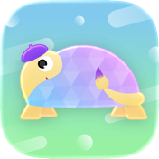
Tortoise Blocks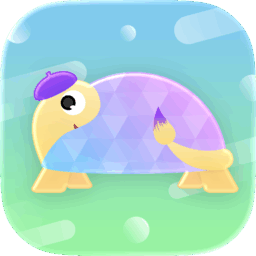
A visual programming app for kids on iPad, Mac and Apple Vision Pro. Drag blocks into a program, press ▶️, and a tortoise draws your picture line by line.
iPadOS 26 or later · macOS 26 or later · visionOS 26 or later
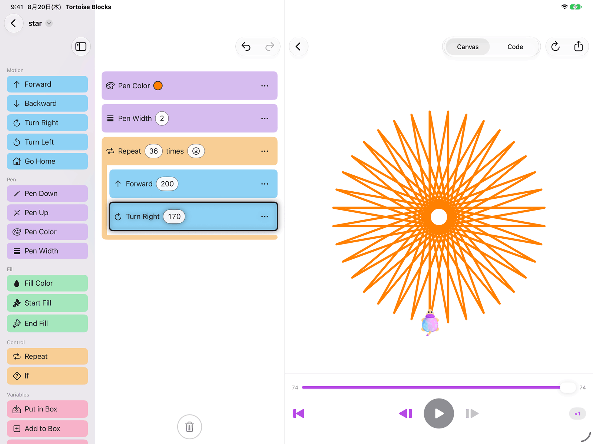
Move, pen, fill, control and boxes. Tap a block to add it or drag it into place, edit its numbers where they sit, reorder freely, drop one on the trash to throw it away — or tap the trash to clear the lot — and undo any of it.
Loop a body, branch on a comparison, and keep a value in a box 🌟 you can add to and multiply. Real programming ideas, in words a child already knows.
Name a block, fill it with blocks, and call it from anywhere in the program. A block can call itself, too — and that is the whole trick behind a tree.
Any number — and any color — can be a dice roll instead, so the same program draws a different picture every single time you run it.
Play, pause, step one command at a time, scrub back and forth, change the speed mid-run. The block being drawn stays highlighted, so it is never a mystery which block made which line.
A code pane shows the very same program as real, syntax-colored Swift — a bridge waiting for the day blocks stop being enough.
Drawings are ordinary documents in Files and Finder, each showing its own picture as its icon. Export SVG or PNG, or send one through the share sheet.
A box holds a number, a repeat block runs the body again and again, and a line that gets a little longer each time turns into a spiral. Nothing here is a special effect — it is the same handful of blocks, arranged.
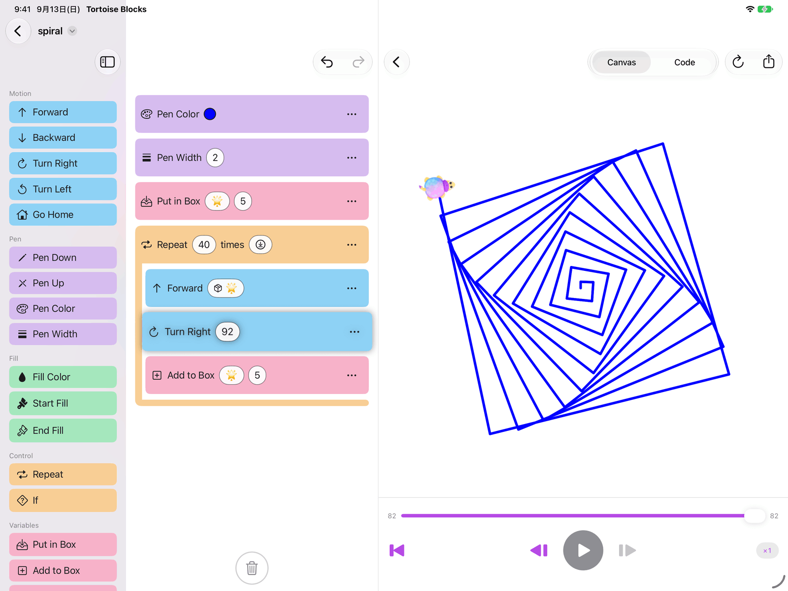
Name a block 🌳, and let it draw a branch and then call itself twice — a little shorter each time, until it is too short to bother. Thirty-one branches later there is a tree, from nine blocks that fit on one screen. It comes as a sample, so it can be watched before it is understood.
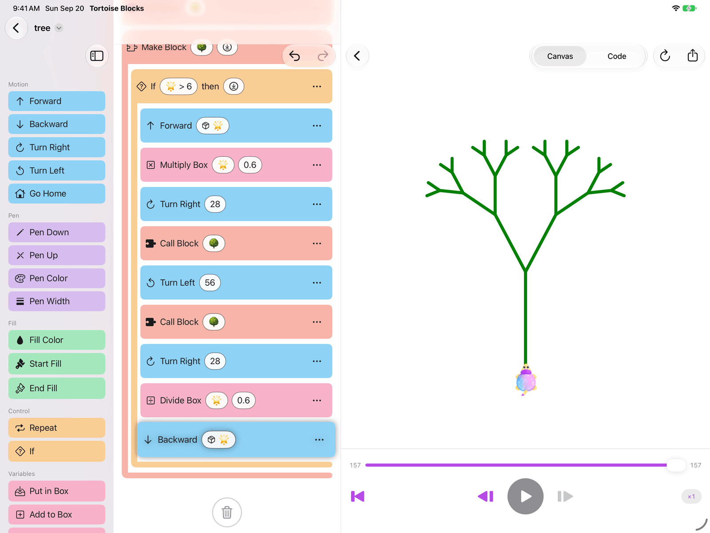
Every program is also a Swift program. Switch to the code pane to see it, syntax-colored, and copy it out — the blocks a child drags and the code a programmer writes turn out to say the same thing.
The same three panes on iPad and Mac, at home with each. On Apple Vision Pro the drawing comes off the screen: open one and it lies on the table in front of you, at whatever size you like, with the tortoise standing on the paper and walking the line as it appears. Underneath, all three are the same ordinary document app — iCloud Drive and Files, autosave, system undo, and its own folder full of drawings you can tell apart at a glance.
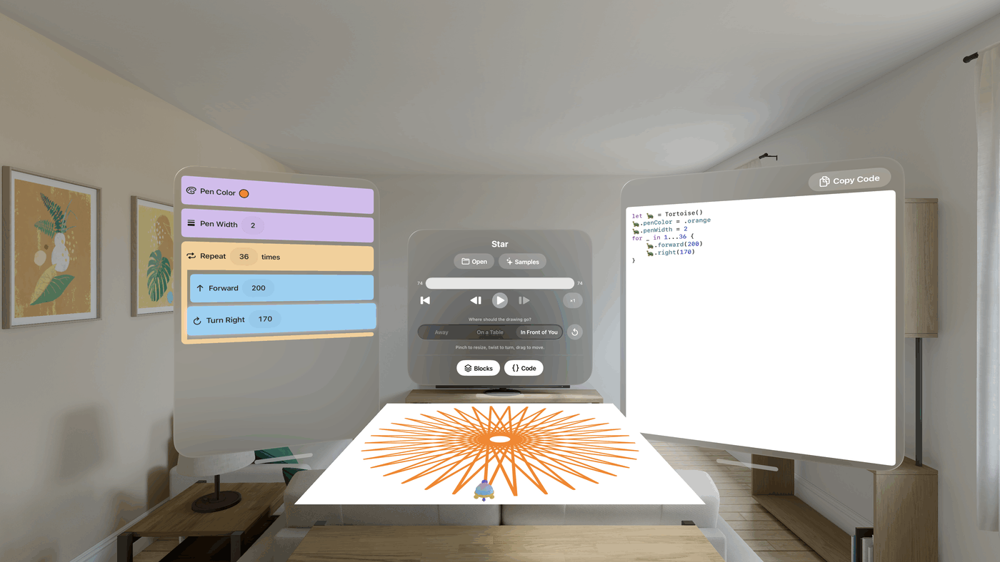
A language called Logo, a researcher who died in 2016, and a classroom in Japan in 1994. The tortoise, the blocks and the code pane beside them all come from there.
This app was built for children, and it asks them for nothing. There is no sign-in, no name to type, no advertising, no analytics — and no networking code anywhere in the app at all.
iPad と Mac と Apple Vision Pro のための、子ども向けビジュアルプログラミングアプリ。ブロックを並べて ▶️ を押すと、カメが1本ずつ線を描いていきます。
iPadOS 26 以降 · macOS 26 以降 · visionOS 26 以降
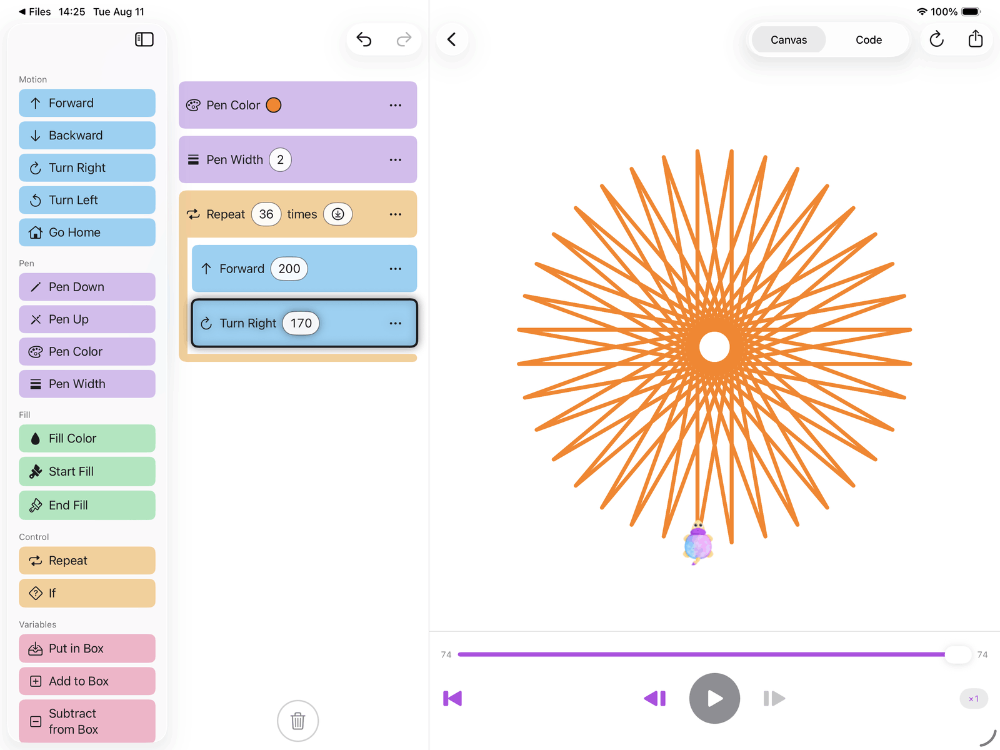
うごき・ペン・ぬり・せいぎょ・はこ。タップで追加してもドラッグで置いてもかまいません。数字はその場で直せ、並べ替えも自由。いらないブロックはゴミ箱へ落とすだけ、作り直すならゴミ箱をタップ。ぜんぶ元に戻せます。
中身をくりかえし、条件で枝分かれし、値を「はこ」🌟 に入れて足したりかけたり。プログラミングの本物の考え方を、子どもが知っている言葉のまま扱えます。
ブロックに名前をつけて、中身を入れて、プログラムのどこからでも呼び出せます。自分で自分を呼ぶこともできます。木が描けるのは、ぜんぶこの仕掛けです。
数字にも色にもサイコロを入れられます。同じプログラムなのに、▶️ を押すたびに違う絵ができあがります。
再生・一時停止、1コマずつ進める・戻す、シークバーで行き来、途中で速さを変える。いま動いているブロックは光ったままなので、どのブロックがどの線を描いたのかが必ずわかります。
同じプログラムを、色付きの本物の Swift コードとしても表示します。ブロックでは足りなくなったその日への、橋渡しです。
作品はふつうの書類として「ファイル」や Finder に並び、アイコンがその絵そのものになります。SVG や PNG で書き出したり、共有シートで送ったりもできます。
「はこ」に数を入れ、「くりかえす」で中身を何度も動かし、少しずつ長くなる線を引く。それだけで、うずまきになります。特別な仕掛けは何もなく、数個のブロックの並べ方だけです。
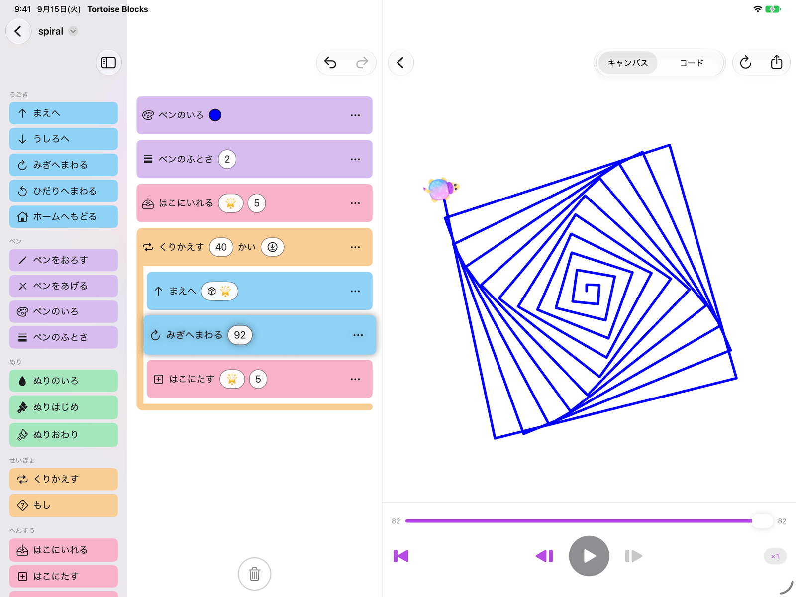
ブロックに 🌳 と名前をつけて、枝を1本描いたら自分を2回呼ぶ。呼ぶたびに少しだけ短くして、短くなりすぎたらやめる。それだけで枝は31本になり、1画面に収まる9個のブロックが木になります。みほんとして入っているので、わかる前に、まず見られます。
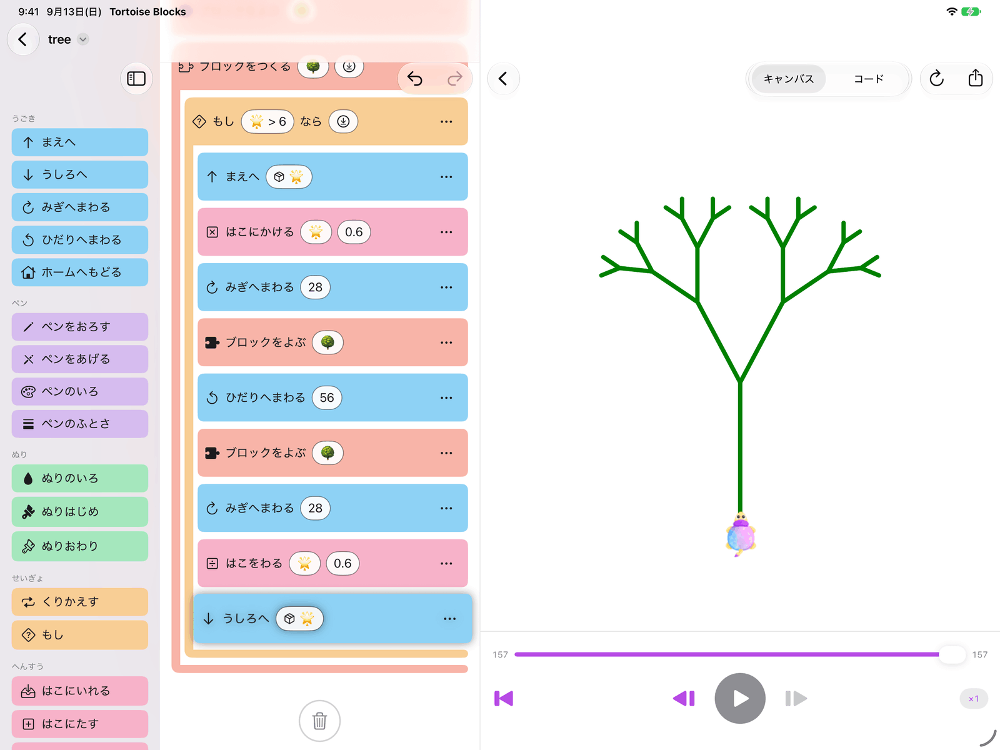
すべてのプログラムは Swift のプログラムでもあります。コード表示に切り替えれば、色付きのソースがそのまま見え、コピーもできます。子どもが並べたブロックと、プログラマが書くコードは、同じことを言っています。
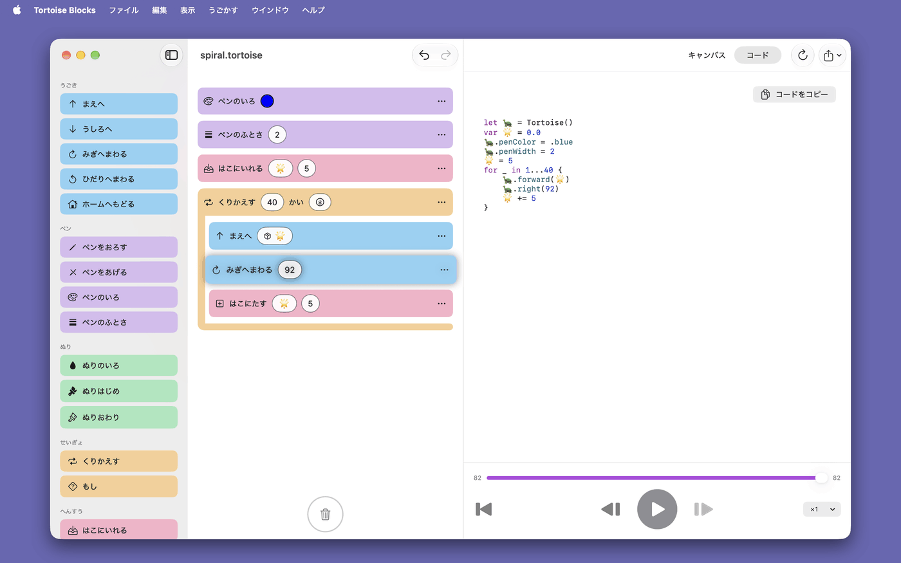
iPad と Mac では3つのペインの構成は同じで、それぞれの操作にちゃんとなじみます。Apple Vision Pro では、絵が画面から出てきます。開くと目の前の机の上に好きな大きさで紙が広がり、その上にカメが立って、線を引きながら歩いていきます。中身はどれも同じ、ふつうの書類アプリです。iCloud Drive と「ファイル」、自動保存、システムの取り消し、そして一目で見分けられる作品の並んだフォルダ。
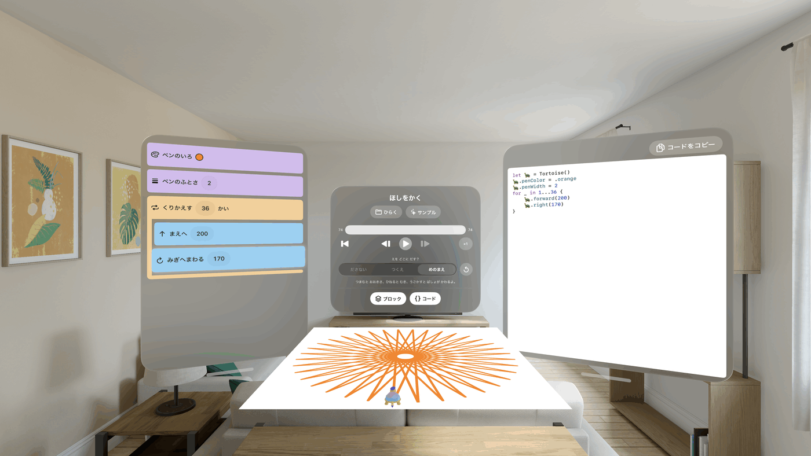
Logo というプログラミング言語と、2016年に亡くなった一人の研究者と、1994年の教室。カメも、ブロックも、その横のコードのペインも、もとをたどればぜんぶ同じひとつの考えから来ています。
このアプリは子どものために作られていて、子どもに何も求めません。ログインも、名前の入力欄も、広告も、利用状況の計測もありません。そもそもアプリの中に、通信を行うコードが1行もありません。